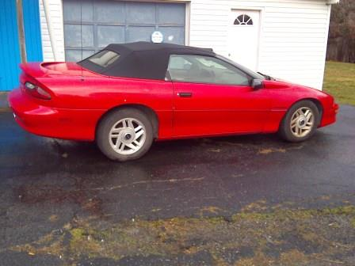

This is my everyday road bike
This is an actual image from my Steam account
My most recent acquisition, a 1994 convertible Camaro, purchased 12/31/14
I have been trying to work on a number of other hobbies, however I do not include them when asked because I did not really succeed.
For instance, I have played guitar of and on for years now. I can play a number of things, however I never learned to read music and forgot more than I know.
I have also purchased a motorcycle and attempted to ride it. Actually learning to ride is still on my to-do list. My initial attempt was ended due to
an issue with the clutch. I bought a used motorcycle from a dealer that was slightly cheaper than the same motorcycle everywhere else. I would have tried to
argue that the dealer obviously knew of the issue since riding motorcycles that are for sale is necessary, if only to move them around. However I bought
it in January and didn't try to ride it until April. I do not think it will be expensive or difficult to fix, however I had an incident where I injured my knee
and I came to the realization that hitting the asphalt would REALLY hurt.